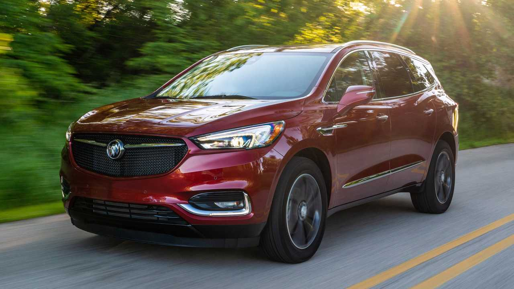
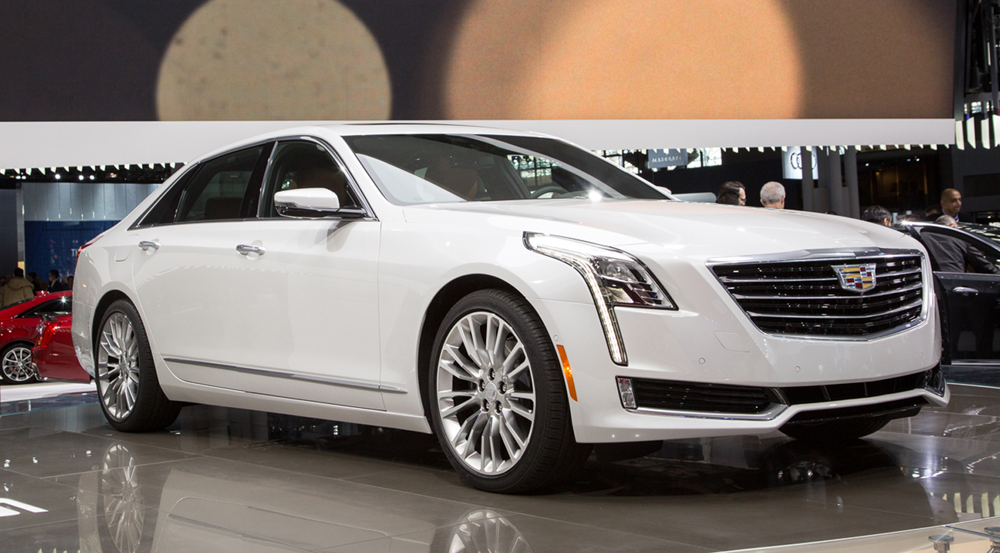
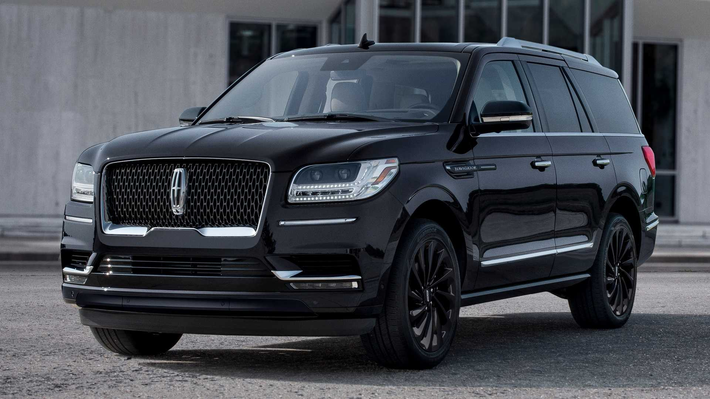

Buick Enclave
A Buick Enclave egy háromsoros luxus crossover SUV, amelyet 2007 óta gyárt a General Motors. A 2006-os Észak-Amerikai Nemzetközi Autókiállításon mutatták be előzetesen, hivatalosan koncepcióautóként, így ez volt az első Lambda jármű, amelyet kiállítottak. Az Enclave részben a 2003-as Detroiti Autószalonon bemutatott Buick Centieme koncepción alapul.
Cadillac CT6
A Cadillac CT6 (a Cadillac Touring 6 rövidítése) egy teljes méretű luxusautó, amelyet a Cadillac gyárt. A CT6-ot a 2015-ös New York-i Nemzetközi Autókiállításon mutatták be, és 2016 márciusában kezdték el forgalmazni az Egyesült Államokban. Ez az első autó, amely a márka átdolgozott elnevezési stratégiáját alkalmazza, valamint az első hátsókerék-hajtású, teljes méretű Cadillac szedán a Fleetwood 1996-os megszüntetése óta.
Lincoln Navigator
A Lincoln Navigator egy teljes méretű luxus SUV, amelyet a Ford Motor Company Lincoln márkája forgalmaz és értékesít az 1998-as modellév óta. Az elsősorban Észak-Amerikában értékesített Navigator a Ford Expedition Lincoln megfelelője. Ez a valaha gyártott legnehezebb sorozatgyártású Lincoln, és egyben a legnagyobb rakodókapacitással rendelkező Lincoln, valamint az első nem limuzin Lincoln, amely több mint hat személy számára kínál ülőhelyet.